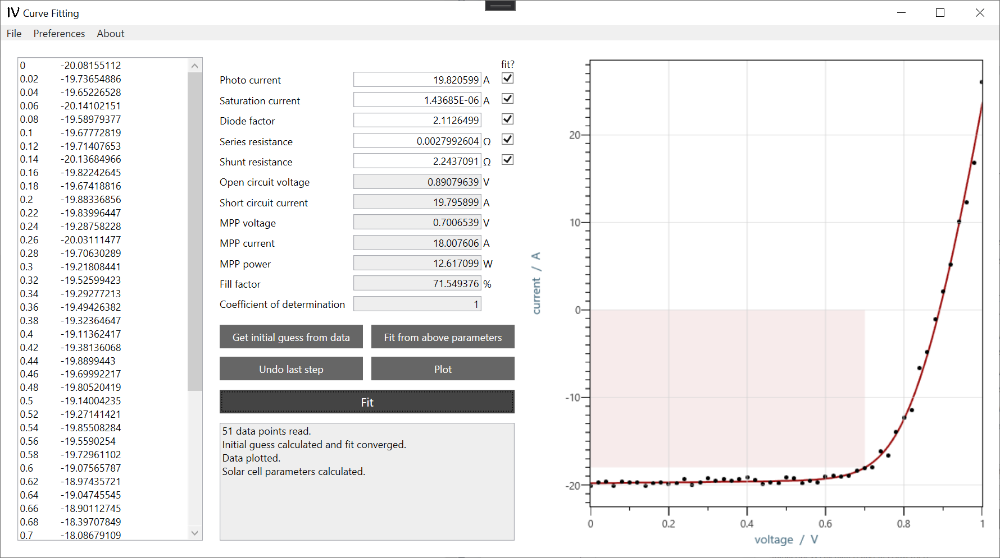

Research Tool
I-V Curve Fitting
A desktop tool for fitting experimentally measured I-V data with the single-diode model and turning raw measurements into usable solar-cell parameters.
The project was built to make a technically demanding fitting workflow fast, transparent, and easy to use in practice. Experimental data can be pasted in directly, key parameters can be fitted or adjusted manually, and the result is visible immediately in both the numbers and the curve.
